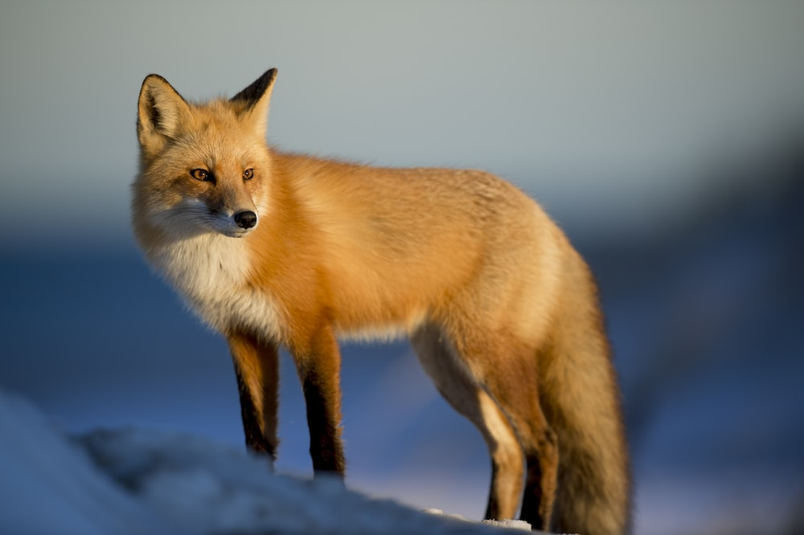

Regn: Animalia
Încrengătură: Chordata
Clasă: Mammalia
Ordin: Carnivora
Familie: Canidae
Vulpea este mai mică decât câinele obișnuit și evident mai mică decât lupul.Are între 7 și 10 kg, rar mai mult. Corpul are sub 1 m lungime, iar coada stufoasă circa 30-40 cm.
Corpul vulpii nu este mare, fiind destul de asemănător cu al câinelui, dar iese în evidență datorită cozii lungi și stufoase, care are vârful alb. Blana este roșcată. Vulpea mănâncă cele mai mici mamifere: șoareci de câmp, popândăi, castori, lemingi, veverițe, iepuri etc.